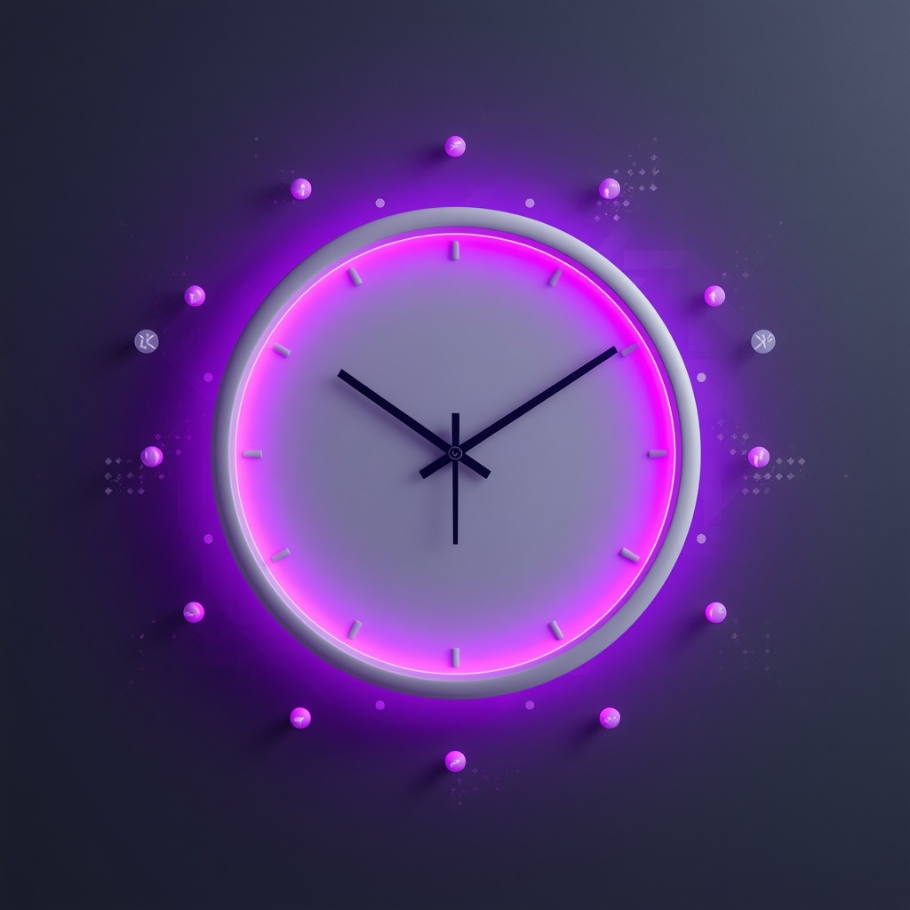

От того, как вы говорите про время, зависит доходимость. Базовый сценарий в голове родителя должен быть: «мы придём».

Если звучит «ну, если что, перенесём» — люди не приходят. Нам нужно, чтобы перенос был редким исключением, а не нормой. Базовый сценарий в голове родителя: «мы придём в этот день и час», а не «может, придём, а может, перенесём».
Этот блок должен звучать в каждом звонке после того, как родитель выбрал день и час.
Не добавлять после «Договорились» фразу «ну, если что, легко перенесём» — это обнуляет весь смысл блока фиксации.
Цель: показать, что перенос возможен, но это исключение, а не норма.
Оператору важно понимать, почему слот — это ценность, и уметь объяснить это родителю.
Цель: чтобы оператор автоматически проговаривал правильный блок.
Тренер даёт 5–7 вариантов слотов (день + дата + время). Задача — вслух проговорить все три элемента блока.
«Среда, 25 февраля, 20:00.»
«Записываю вас на среду, 25 февраля, в 20:00 по Москве. Правильно понимаю, что вы будете с [именем] онлайн 25 февраля в 20:00? Если форс‑мажор — не позже чем за 3 часа. Договорились?»
Задание: сказать 3 варианта фразы про перенос без слов «обязательство» и «вы должны».
Цель: убрать из речи жёсткие слова, оставить спокойную уверенность.
Без давления показать ценность и мягко вернуть к фиксации.
«Ну, если что, мы потом ещё как‑нибудь запишемся…»
«Понимаю. Просто сейчас есть удобное окно у преподавателя. Если его отпустить, придётся ждать. Предлагаю зафиксировать именно это время, хорошо?»